Piezas de carrocería para Mitsubishi en Panamá
85 piezas disponibles hoy, cada una con su foto y su código: defensas traseras (13), parrillas (9), faros y lámparas delanteras (7), defensas delanteras (7).
- Garantía de 3 días
- Foto real de cada pieza
- Efectivo, Yappy o ACH
- Lunes a sábado, 8:00 a. m. a 5:00 p. m.
Por modelo
Outlander 32L200 21Montero 10Eclipse Cross 8Montero Sport 8ASX 6Outlander Sport 5Lancer 4Xpander 4L200 Triton 3
Defensas traseras para Mitsubishi 13
 DT139Outlander2022-26 · original
DT139Outlander2022-26 · original DT140Outlander2022-26 · original
DT140Outlander2022-26 · original DT141Xpander2023 · original
DT141Xpander2023 · original DT142Montero Sport2020-24 · original
DT142Montero Sport2020-24 · original DT143ASX2019 · original
DT143ASX2019 · original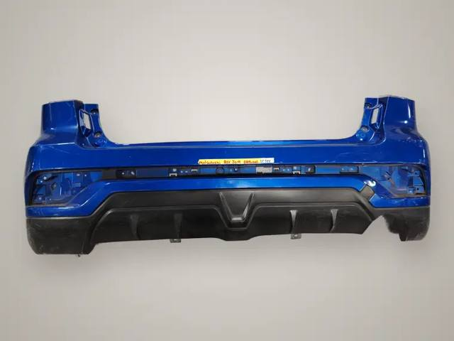
DT144ASX2019 · original DT145Xpander2023 · original
DT145Xpander2023 · original DT146Outlander2016-18 · original
DT146Outlander2016-18 · original DT147Outlander2022-26 · original
DT147Outlander2022-26 · original DT148Montero Sport2016-19 · original nuevo
DT148Montero Sport2016-19 · original nuevo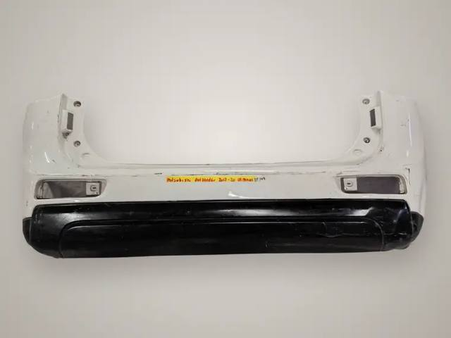
DT149Outlander2017-20 · original DT150Montero Sport2020-24 · original
DT150Montero Sport2020-24 · original DT210Montero Sport2016-19 · original
DT210Montero Sport2016-19 · originalParrillas para Mitsubishi 9
 648L2002019-24 · original
648L2002019-24 · original 649Outlander2022-25 · original
649Outlander2022-25 · original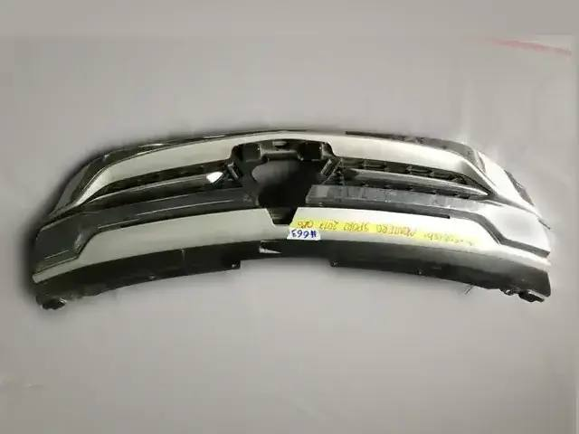
663Montero Sport2017 · original 665L2002019-23 · original
665L2002019-23 · original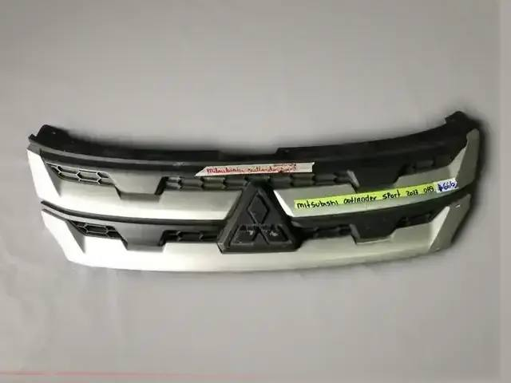
666Outlander Sport2013-15 · original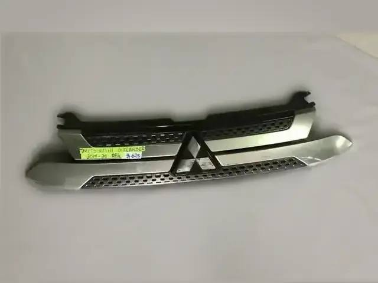
678Outlander2019-21 · original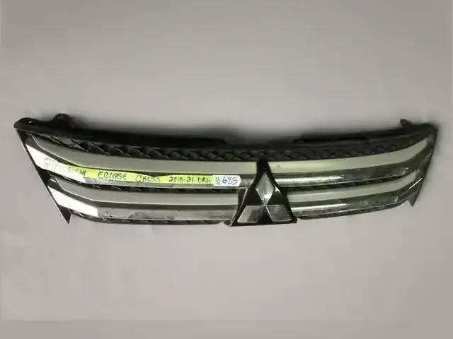
685Eclipse Cross2018-21 · original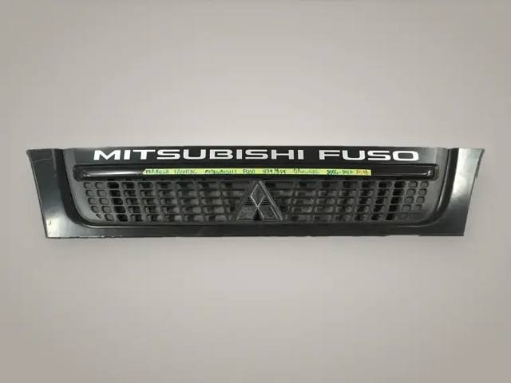
P018Fuso 839 / 8592006-2017 · original P011L2002015 · original
P011L2002015 · originalFaros y lámparas delanteras para Mitsubishi 7
 097Eclipse Cross2018-20 · lado izquierdo · original
097Eclipse Cross2018-20 · lado izquierdo · original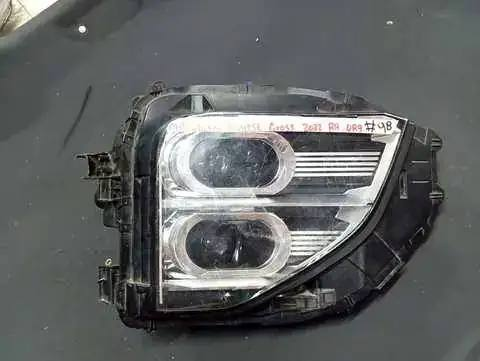
098Eclipse Cross2022-25 · lado derecho · original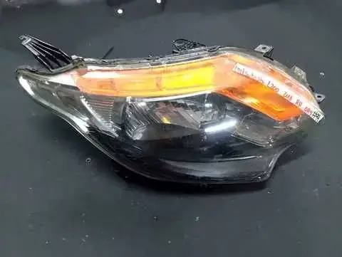
099L2002016-18 · lado derecho · original 119Outlander2022-26 · lado izquierdo · original
119Outlander2022-26 · lado izquierdo · original 120Eclipse Cross2025 · lado izquierdo · original
120Eclipse Cross2025 · lado izquierdo · original LD059Montero2003-07 · lado derecho · original
LD059Montero2003-07 · lado derecho · original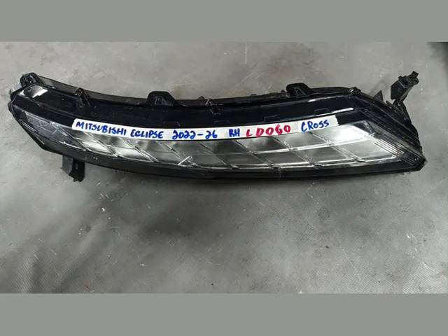
LD060Eclipse Cross2022-26 · lado derechoDefensas delanteras para Mitsubishi 7
 918Outlander2022-26 · genérico
918Outlander2022-26 · genérico 919Outlander2022-26 · genérico
919Outlander2022-26 · genérico 920Outlander2022-26 · genérico
920Outlander2022-26 · genérico 921L2002019-23 · original
921L2002019-23 · original DD018Outlander2022-24 · original
DD018Outlander2022-24 · original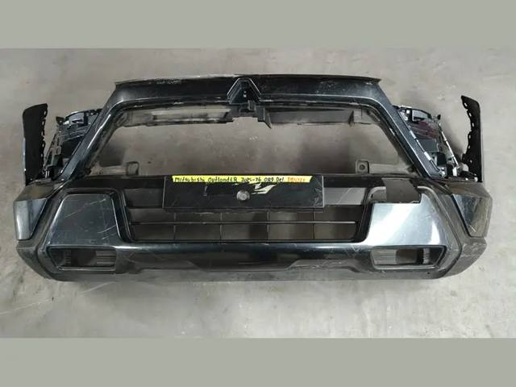
DD021Outlander2025-26 · original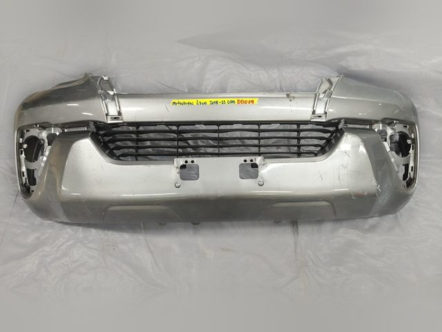
DD029L2002018-22 · originalFlares para Mitsubishi 6
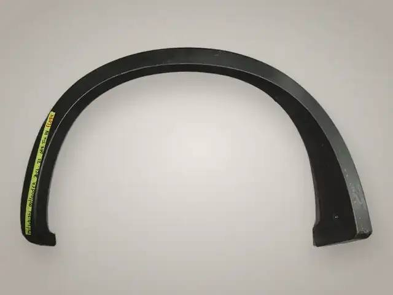
FL094Outlander2022-26 · lado derecho · original FL095ASX2019 · lado derecho · genérico
FL095ASX2019 · lado derecho · genérico FL098Outlander2022-26 · lado izquierdo · original
FL098Outlander2022-26 · lado izquierdo · original FL112Outlander ASXlado derecho · original
FL112Outlander ASXlado derecho · original FL185Outlander Sport2023-26 · lado derecho · genérico
FL185Outlander Sport2023-26 · lado derecho · genérico FL188Outlander2022-25 · lado izquierdo
FL188Outlander2022-25 · lado izquierdoLámparas traseras para Mitsubishi 5
 356Outlander / ASX2020-24 · lado izquierdo · original
356Outlander / ASX2020-24 · lado izquierdo · original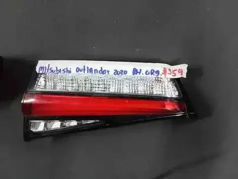
359Outlander2019-21 · lado derecho · original 360Eclipse Cross2024 · lado derecho · original
360Eclipse Cross2024 · lado derecho · original 361Eclipse Cross2024 · lado derecho · original
361Eclipse Cross2024 · lado derecho · original 379Lancer2003 · lado izquierdo · original
379Lancer2003 · lado izquierdo · originalMolduras traseras para Mitsubishi 4
 MLT009L2002018 · original
MLT009L2002018 · original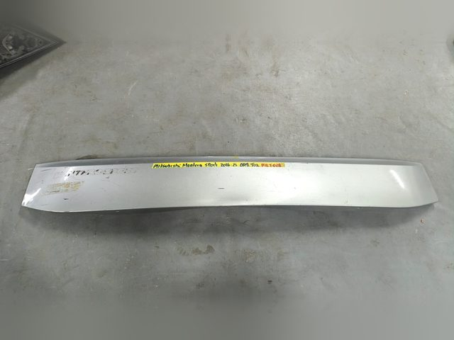
MLT028Montero Sport2016-25 · original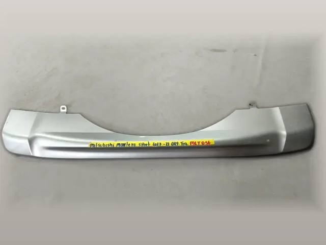
MLT056Montero Sport2017-21 · original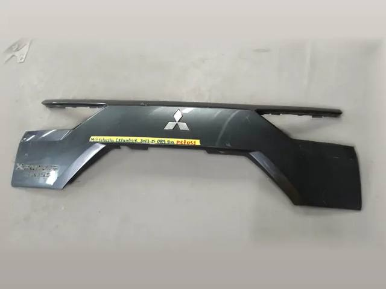
MLT051Xpander2023-25 · originalDefensas traseras inferiores para Mitsubishi 4
 DTI045Outlander2019-21 · original
DTI045Outlander2019-21 · original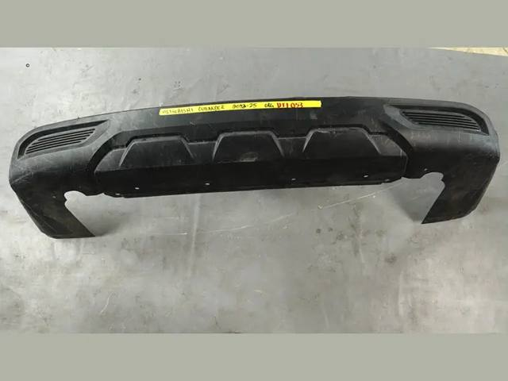
DTI053Outlander2022-25 · original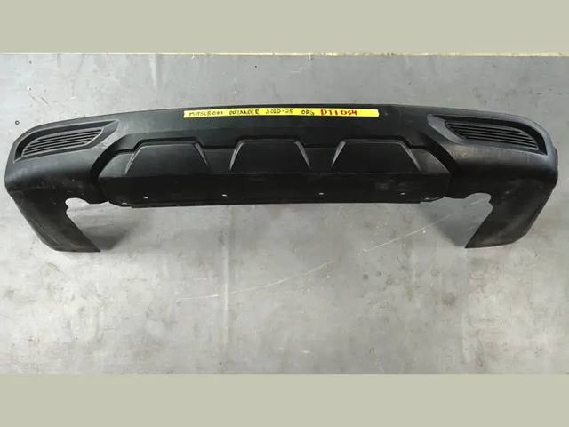
DTI054Outlander2022-25 · original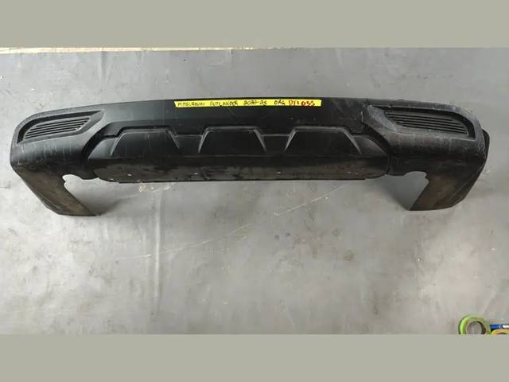
DTI055Outlander2022-25 · originalCubrepolvos para Mitsubishi 3
 CP002Mirage2014 · lado izquierdo · genérico
CP002Mirage2014 · lado izquierdo · genérico CP003Mirage2014 · lado izquierdo · genérico
CP003Mirage2014 · lado izquierdo · genérico CP024L2002015-19 · lado derecho · original
CP024L2002015-19 · lado derecho · originalEstribos y rolling boards para Mitsubishi 3
 RB006Montero2005 · lado derecho · nuevo
RB006Montero2005 · lado derecho · nuevo RB043ASX2010-2016 · lado izquierdo
RB043ASX2010-2016 · lado izquierdo RB053L2002020-2024 · lado izquierdo · original
RB053L2002020-2024 · lado izquierdo · originalTapas de baúl para Mitsubishi 3
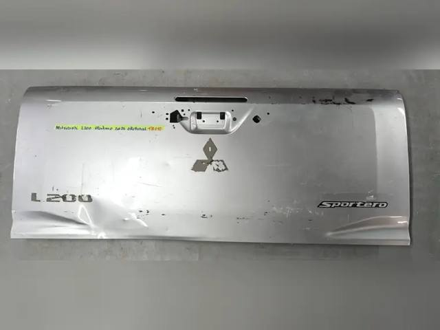
TB010L200 Sportero2024-26 · original TB011L200 Sportero2016-23 · original
TB011L200 Sportero2016-23 · original TB053Outlander2016-21 · original
TB053Outlander2016-21 · originalRetrovisores para Mitsubishi 2
 RV022L2002016-23 · lado derecho · original
RV022L2002016-23 · lado derecho · original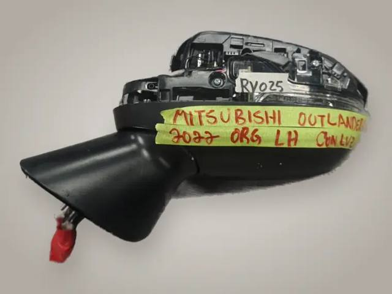
RV025Outlander2022-26 · lado izquierdo · originalCapós para Mitsubishi 2
 TM067Lancer
TM067LancerRefuerzos delanteros para Mitsubishi 2
 R025Lancer / Eclipse Cross
R025Lancer / Eclipse Cross R026Outlander
R026OutlanderTapas superiores de radiador para Mitsubishi 2
Guardafangos traseros para Mitsubishi 2
 GFT018L200
GFT018L200Tableros para Mitsubishi 2
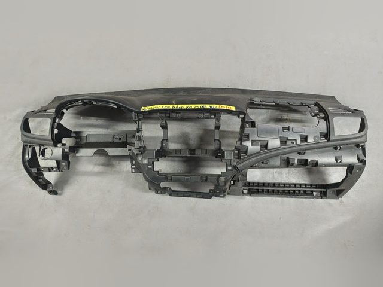
CPF002L200 Triton2021-24 · original nuevo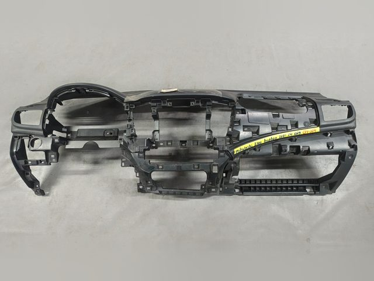
CPF004L200 Triton2021-24 · originalMolduras delanteras para Mitsubishi 2
 MLD027L200 Triton
MLD027L200 Triton MLD026Outlander Sport
MLD026Outlander SportPuertas para Mitsubishi 1
Marcos de radiador para Mitsubishi 1
 MR047Xpander
MR047XpanderVentiladores para Mitsubishi 1
 VR011L200
VR011L200Defensas delanteras inferiores para Mitsubishi 1
 DDI018Outlander
DDI018OutlanderProtectores inferiores para Mitsubishi 1
Vidrios para Mitsubishi 1
 VA046Lancer
VA046LancerDepósitos de agua para Mitsubishi 1
Otras marcas
ToyotaKIAHyundaiNissanSuzukiHondaGACBMWFordMercedes-BenzMazdaChevroletForthingJeepIsuzuVolkswagenBYDCheryAudiLexusMiniRAMFiatMaxusJaecooLincolnDodgeDFSKMGChanganSubaruPorscheDongfengPeugeotLand RoverAcuraInfinitiHavalOmodaDaewooGeelyGwmVolvoJMCUniversalHinoJACGMCOpelCadillacScionRenaultKaiyiDaihatsuKarryInternationalJaguarFaw